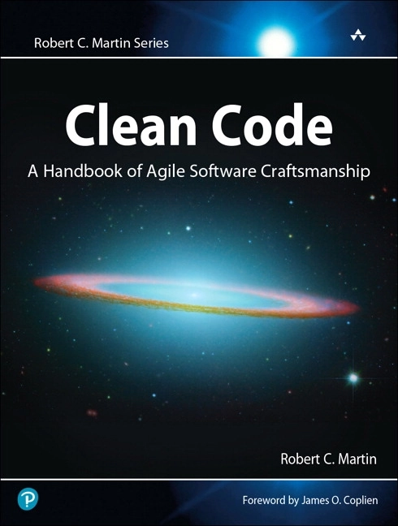

Clean code ... should you DRY?

2008 Robert C. Martin published his book ‘Clean Code’. I was just starting my new job as Senior Software Developer at Hypoport. It was eye-opening. We discussed it in a tech department wide book circle, exchanged ideas of what things mean and agreed to some standards which are important to us.
Over the years, I learned that people took that as the bible. And it went further. My favourite example of taking it religiously is: Don’t repeat yourself (DRY). Never ever duplicate code. Make sure you generalize everything so it fits everything if it does remotely the same thing.
Wrong.
I think this really hurts. I once listened to a podcast with an interview of the person responsible for the development of the Safari web browser (I think John Gruber interviewed that person). Two things stuck to my mind:
If it does not pass the speed test (aka it got slower) it will not be released Only generalize things once if it occurred three times, before that, code duplication is ok. I really like that.
It hurts so much so generalize some piece of code with more parameters, adding to complexity and confusion, just for the sake of saving some lines of code. It is just not worth it. In interviews, I still get answers that every remotely duplicated line of code needs to be eliminated. I bet students still learn this as good coding practice in university. This needs to be changed.
Don’t get me wrong. I’m all for removing duplication. Just where it makes sense. Before you have seen multiple usage of a similar algorithm it hurts more to generalize it, than to just duplicate it.
As usual, don’t take anything in books, presentations or even blog posts (as this one) as a thing you need to do. Think about it if it makes sense to apply it in your situation and what are the costs in the future.
Bonus: Clean Code does not mean, that you don’t have to document the code. But that is another post.